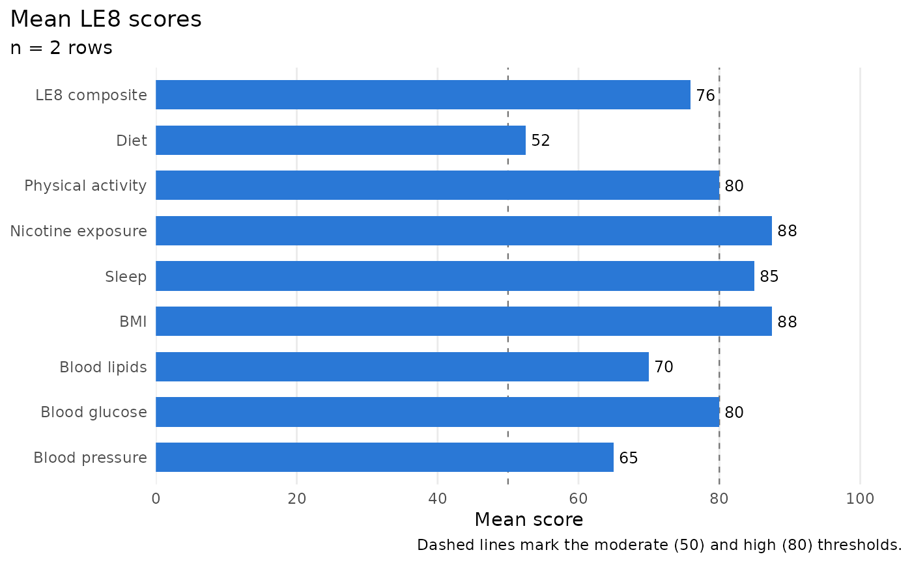

Overview
essential8 computes Life’s Essential 8 (LE8)
cardiovascular health scores using the American Heart Association’s 2022
definitions. Subjects aged 20 years or older are scored using the adult
definitions whereas subjects aged 4 months to 19 years are scored using
the pediatric definitions; this vignette scores adults, see
vignette("pediatric-scoring") for details about pediatric
scoring.
This vignette shows how to score complete and incomplete data. The
examples use dplyr and the native pipe (|>,
available in R 4.1+). See ?score_le8 for all input
requirements and scoring details.
Create an adult data frame
Supply one row per person. This example includes two adults with responses to the 16-item Mediterranean Eating Pattern for Americans (MEPA) questionnaire. It shows both BMI profiles and both glucose measures.
library(essential8)
library(dplyr)
#>
#> Attaching package: 'dplyr'
#> The following objects are masked from 'package:stats':
#>
#> filter, lag
#> The following objects are masked from 'package:base':
#>
#> intersect, setdiff, setequal, union
adult_data <- tibble(
id = c("patient_1", "patient_2"),
age = c(42, 61),
sex = c("female", "male"),
# Daily servings
olive_oil = c(2, 1),
green_leafy_vegetables = c(1, 0.5),
other_vegetables = c(2, 1),
whole_grains = c(2, 1),
# Weekly servings
berries = c(3, 1),
other_fruit = c(5, 2),
meat = c(2, 5),
fish = c(3, 1),
chicken = c(2, 4),
cheese = c(1, 4),
butter_cream = c(1, 5),
beans = c(3, 1),
sweets_and_pastries = c(1, 5),
nuts = c(4, 1),
fast_food = c(0, 2),
alcohol = c(4, 0),
moderate_activity_minutes = c(100, 60),
vigorous_activity_minutes = c(25, 0),
smoking_status = c("never", "former"),
years_since_quit = c(0, 6),
current_inhaled_nds = c(FALSE, FALSE),
secondhand_smoke_home = c(FALSE, FALSE),
sleep_hours = c(7.5, 6.5),
bmi = c(24.2, 24.0),
bmi_profile = c("general", "asian_pacific"),
non_hdl_cholesterol = c(125, 145),
lipid_lowering_treatment = c(FALSE, TRUE),
diabetes = c(FALSE, FALSE),
glucose_measure = c("fasting_glucose", "hba1c"),
glucose_value = c(95, 6.0),
systolic_bp = c(118, 132),
diastolic_bp = c(76, 84),
antihypertensive_treatment = c(FALSE, TRUE)
)Compute LE8 scores
Pass the data frame to score_le8(). The returned data
frame retains the input columns and appends the derived activity
measure, eight component scores, the number of contributing components,
composite score, a completeness indicator, and cardiovascular health
category.
scored <- adult_data |>
score_le8(diet_method = "mepa")
scored |>
select(id, mepa_total, diet_score, le8_composite_score, le8_category)
#> # A tibble: 2 × 5
#> id mepa_total diet_score le8_composite_score le8_category
#> <chr> <int> <dbl> <dbl> <chr>
#> 1 patient_1 14 80 97.5 high
#> 2 patient_2 4 25 54.4 moderateEach vigorous activity minute counts as two moderate activity minutes
and is recorded as
physical_activity_moderate_equivalent_minutes. The
le8_composite_score is the mean of the eight component
scores for complete records. Categories are "low" below 50,
"moderate" from 50 to less than 80, and "high"
at 80 or higher.
The component scores are available for analysis and quality checks:
scored |>
select(id, ends_with("_score"), -le8_composite_score)
#> # A tibble: 2 × 9
#> id diet_score physical_activity_sc…¹ nicotine_score sleep_score bmi_score
#> <chr> <dbl> <dbl> <dbl> <dbl> <dbl>
#> 1 patien… 80 100 100 100 100
#> 2 patien… 25 60 75 70 75
#> # ℹ abbreviated name: ¹physical_activity_score
#> # ℹ 3 more variables: blood_lipids_score <dbl>, blood_glucose_score <dbl>,
#> # blood_pressure_score <dbl>Understanding the MEPA inputs
The MEPA response columns use the 16 screener-item labels shown
above. Use mepa_columns to map different column names to
these labels.
-
olive_oil,green_leafy_vegetables,other_vegetables, andwhole_grainsare servings per day. -
berries,other_fruit,meat,fish,chicken,cheese,butter_cream,beans,sweets_and_pastries,nuts, andalcoholare servings per week. -
fast_foodis the number of times per week that meals are consumed from fast-food restaurants.
The screener defines meat as red meat, hamburger, bacon,
or sausage; fish includes fish, shellfish, or seafood; and
cheese means full-fat or regular cheese or cream
cheese.
score_le8() evaluates each criterion and returns their
sum as mepa_total so that the derived diet input can be
audited. The default MEPA sex field is sex. If
sex is absent, a field named female is
recognized automatically; map any other name with, for example,
mepa_columns = c(sex = "reported_sex"). Values are trimmed
and matched case-insensitively as "m"/"f" or
"male"/"female". Numeric or character
0/1 values are also accepted, where
0 is male and 1 is female. A logical
female column (TRUE for female) is also
accepted.
Choosing a diet scoring method
The diet_method argument defaults to
"mepa". If your data contains both MEPA and percentile
inputs, split the rows into separate data frames and call
score_le8() separately for each method.
essential8 can also compute DASH/HEI-2015 percentiles if
you collected data for those instruments. Use
diet_method = "dash" or "hei2015" with raw
food and nutrient inputs,the resulting data-frame is similar to the MEPA
call. Otherwise supply the DASH/HEI-2015 scores to be converted to
percentiles, or the percentiles themselves in the data-frame via
diet_value. See
vignette("population-diets", package = "essential8") for
the background, scoring rules, and examples.
Here is an example where the percentiles are user-supplied:
Scoring tips
- For
diet_method = "mepa",diet_valuemust be absent or contain only missing values. - For
diet_method = "percentile", MEPA columns are ignored. Supplydiet_valueas a DASH or HEI-2015 percentile from 0 to 100, calculated against the relevant reference population before callingscore_le8(). If it is absent or missing, the diet component cannot be scored. - Set
bmi_profileto either"general"or"asian_pacific". The function does not infer a BMI profile from race or ethnicity. - Set
glucose_measureto"fasting_glucose"for a value in mg/dL or"hba1c"for a percentage. Diagnosed diabetes requires HbA1c for scoring.
Three optional flags apply adjustments that require clinical
judgment: apply_lean_muscular_bmi_override,
apply_sleep_apnea_penalty, and
apply_prediabetes_metformin_penalty. When these columns are
absent, their adjustments are not applied.
Working with incomplete component data
Component inputs may be missing, their columns may be omitted, or
optionally, you can choose to impute missing data using
score_le8(impute = TRUE). Supply values in the documented
units. age must be complete and at least 20 for every
row.
By default, score_le8() calculates the composite score
when at least seven of the eight component scores are available. Choose
any threshold from 1 through 8 with min_components. The
composite is the mean of the available components when the threshold is
met.
adult_data |>
mutate(sleep_hours = c(NA_real_, 6.5)) |>
score_le8(min_components = 7) |>
select(id, le8_composite_score, n_components, le8_complete)
#> # A tibble: 2 × 4
#> id le8_composite_score n_components le8_complete
#> <chr> <dbl> <int> <lgl>
#> 1 patient_1 97.1 7 FALSE
#> 2 patient_2 54.4 8 TRUEn_components reports how many components were scored.
le8_complete is TRUE when all eight are
available. Missing values in individual rows do not trigger warnings. If
a component cannot be scored for anyone, a warning names it. The warning
also explains when too few components are available to calculate any
composite scores.
Summarize, reshape, and plot scores
score_le8() returns its input with the extra class
essential8_scores, which adds methods for summarizing and
plotting. summary() reports how many rows were scored, the
distribution of each score, and the categories:
summary(scored)
#> LE8 scores: 2 rows (2 adult)
#> Diet method: mepa; min_components: 7
#> Composite score available for 2 of 2; all 8 components for 2.
#>
#> n mean sd median IQR range
#> LE8 composite 2 75.9 30.5 75.9 65.2-86.7 54.4-97.5
#> Diet 2 52.5 38.9 52.5 38.8-66.2 25.0-80.0
#> Physical activity 2 80.0 28.3 80.0 70.0-90.0 60.0-100.0
#> Nicotine exposure 2 87.5 17.7 87.5 81.2-93.8 75.0-100.0
#> Sleep 2 85.0 21.2 85.0 77.5-92.5 70.0-100.0
#> BMI 2 87.5 17.7 87.5 81.2-93.8 75.0-100.0
#> Blood lipids 2 70.0 42.4 70.0 55.0-85.0 40.0-100.0
#> Blood glucose 2 80.0 28.3 80.0 70.0-90.0 60.0-100.0
#> Blood pressure 2 65.0 49.5 65.0 47.5-82.5 30.0-100.0
#>
#> Category (rows with a composite score):
#> n percent
#> low 0 0.0%
#> moderate 1 50.0%
#> high 1 50.0%dplyr::summarise() without any expressions returns the
same statistics as a data frame, one row per measure, optionally by
group with .by. Ordinary summaries, such as
summarise(scored, mean_le8 = mean(le8_composite_score)),
work as usual.
summarise(scored)
#> # A tibble: 9 × 10
#> measure n n_missing mean sd min q25 median q75 max
#> <fct> <int> <int> <dbl> <dbl> <dbl> <dbl> <dbl> <dbl> <dbl>
#> 1 composite 2 0 75.9 30.5 54.4 65.2 75.9 86.7 97.5
#> 2 diet 2 0 52.5 38.9 25 38.8 52.5 66.2 80
#> 3 physical_activity 2 0 80 28.3 60 70 80 90 100
#> 4 nicotine 2 0 87.5 17.7 75 81.2 87.5 93.8 100
#> 5 sleep 2 0 85 21.2 70 77.5 85 92.5 100
#> 6 bmi 2 0 87.5 17.7 75 81.2 87.5 93.8 100
#> 7 blood_lipids 2 0 70 42.4 40 55 70 85 100
#> 8 blood_glucose 2 0 80 28.3 60 70 80 90 100
#> 9 blood_pressure 2 0 65 49.5 30 47.5 65 82.5 100tidy() reshapes the scores into long format, one row per
person and measure, ready for grouped analyses or custom plots:
tidy(scored, id_cols = "id")
#> # A tibble: 18 × 5
#> row id le8_population measure score
#> <int> <chr> <chr> <fct> <dbl>
#> 1 1 patient_1 adult composite 97.5
#> 2 1 patient_1 adult diet 80
#> 3 1 patient_1 adult physical_activity 100
#> 4 1 patient_1 adult nicotine 100
#> 5 1 patient_1 adult sleep 100
#> 6 1 patient_1 adult bmi 100
#> 7 1 patient_1 adult blood_lipids 100
#> 8 1 patient_1 adult blood_glucose 100
#> 9 1 patient_1 adult blood_pressure 100
#> 10 2 patient_2 adult composite 54.4
#> 11 2 patient_2 adult diet 25
#> 12 2 patient_2 adult physical_activity 60
#> 13 2 patient_2 adult nicotine 75
#> 14 2 patient_2 adult sleep 70
#> 15 2 patient_2 adult bmi 75
#> 16 2 patient_2 adult blood_lipids 40
#> 17 2 patient_2 adult blood_glucose 60
#> 18 2 patient_2 adult blood_pressure 30plot() draws the mean scores with ggplot2. Use
type = "distribution" for box plots and
type = "composite" for a histogram of the composite score
by category. The result is a ggplot object that you can modify
further.
plot(scored)
Row-wise verbs such as filter(), mutate(),
and joins keep the class; group_by() and saving to a file
drop it. Use as_le8_scores() to restore it, for example
after reading saved scores back into R.
Source-defined inputs
score_le8() returns an error when the AHA definition
does not assign a score. Examples include a BMI below 18.5, which
requires clinical judgment; a glucose value in the diabetes range with
no recorded diabetes diagnosis; and current use of both combustible
tobacco and an inhaled nicotine-delivery system. Review these records
before scoring.